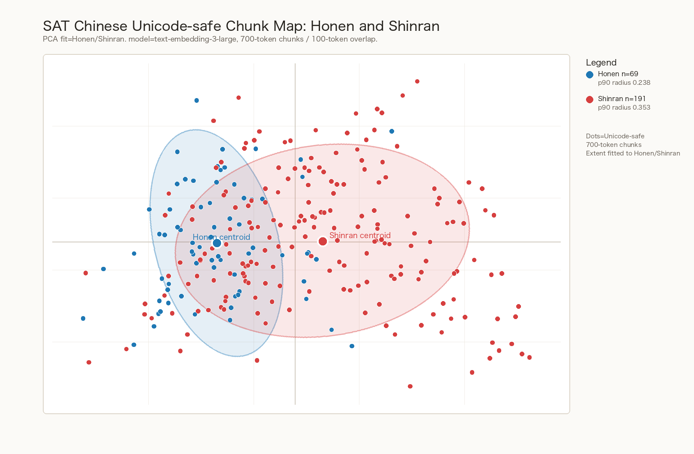
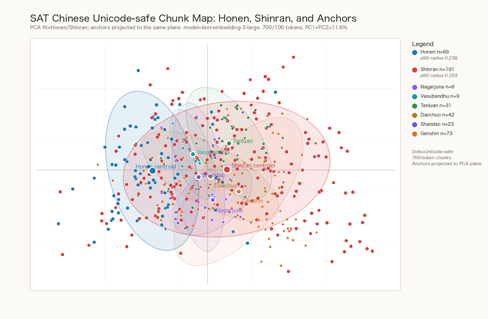
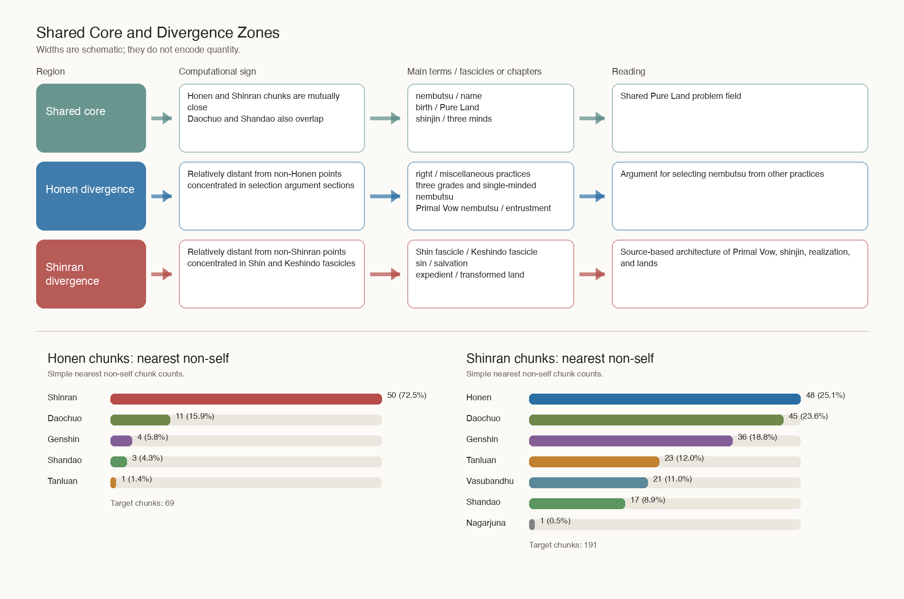
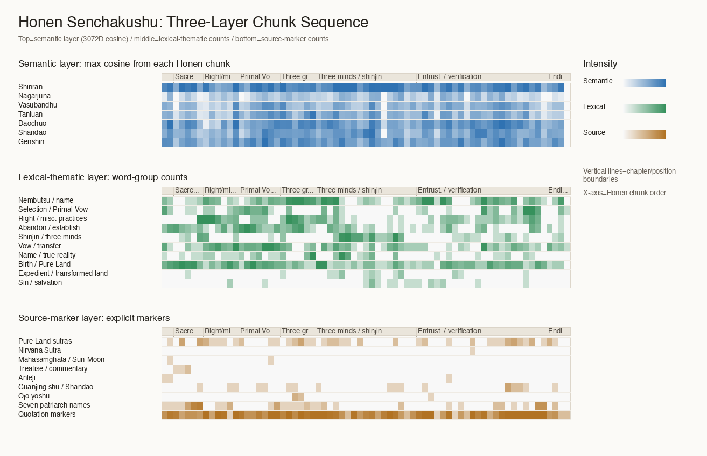
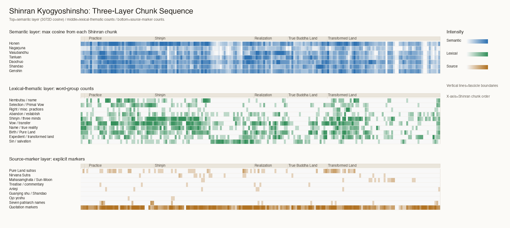

Abstract
This paper is an exploratory study of how Honen's Senchaku Hongan Nembutsu Shu and Shinran's Ken Jodo Shinjitsu Kyo Gyo Sho Monrui overlap in semantic space, and where relative divergence zones appear after that overlap is established. The analysis uses a three-layer framework: a semantic layer, a lexical-thematic layer, and a source-marker layer. The lexical-thematic layer is not strict stylometry; it is implemented as dictionary-based counts of doctrinal and thematic word groups. This paper narrows the framework of the preceding Buddhist text embedding map [1] to Honen, Shinran, and Pure Land patriarchal anchors. The point is not to ask whether Honen and Shinran overlap, but what branches off after they overlap.
The nearest non-self neighbors of the 69 Honen chunks are Shinran in 50 cases, Daochuo in 11, Genshin in 4, Shandao in 3, and Tanluan in 1. The nearest non-self neighbors of the 191 Shinran chunks are distributed across Honen in 48 cases, Daochuo in 45, Genshin in 36, Tanluan in 23, Vasubandhu in 21, Shandao in 17, and Nagarjuna in 1. A 1000-iteration capped-20 subsampling check reduces the apparent Honen-to-Shinran concentration, but the broader tendency remains: Honen stays close to Shinran and Daochuo, while Shinran disperses across Daochuo, Honen, Vasubandhu, Tanluan, and other anchors.
When divergence from the shared core is compared, Honen-side candidates concentrate around right and miscellaneous practices, selection and rejection among practices, the Primal Vow, and entrustment or verification. Shinran-side candidates concentrate in the Shin and Keshindo fascicles, especially around shinjin and the three minds, sin and salvation, protective deities and cosmic order, critique of external teachings, and true / provisional sorting. The resulting hypothesis is that the difference between Honen and Shinran appears less as a difference in the meaning of nembutsu itself than as a difference in how the same nembutsu field is developed into forms of argument and source-based doctrinal architecture. This is a computationally derived exploratory result, not a replacement for historical, doctrinal, or citation-based scholarship.
Translation note. The authoritative edition of this paper is the Japanese print/book edition. This English version is an AI-assisted translation prepared for access by English-language readers. It preserves Chinese titles, Taisho identifiers, and key Japanese terms where needed, but wording and nuance should be checked against the Japanese edition for citation or scholarly use.
Keywords: Honen, Shinran, Senchaku Hongan Nembutsu Shu, Kyogyoshinsho, shared core, divergence zones, semantic embeddings, three-layer analysis, SAT, source markers
1Introduction
1.1Position of This Paper
This paper follows the author's preceding study on three-layer maps of Buddhist texts [1], but narrows the target to Pure Land materials and especially to the relation between Honen and Shinran. The preceding study separated meaning, style/lexicon, and source markers in order to avoid treating semantic proximity, lexical similarity, and source relations as the same thing.
The central target texts are Honen's Senchaku Hongan Nembutsu Shu and Shinran's Ken Jodo Shinjitsu Kyo Gyo Sho Monrui. In this English version, these are also referred to as Senchakushu and Kyogyoshinsho. Since both texts address central Pure Land questions, a strong overlap in semantic space is expected. The important question is therefore not whether they overlap, but in what directions they differ after they overlap.
In this paper, a "divergence zone" means a textual region that appears relatively away from the shared core. It is a working term for relative protrusion, not a doctrinal or historical conclusion by itself.
1.2Prior Research and the Position of This Study
The relationship between Senchakushu and Kyogyoshinsho has long been studied from doctrinal, intellectual-historical, and citation-based perspectives. Direct comparative studies include Moriwaki [3], Inaba [4], Umehara [5], and Asai [6]. More recently, Nezu has addressed the boundary between Honen's thought and Shinran's distinctive development [7]. This paper does not claim to discover the comparison itself.
Those prior studies can roughly be grouped into three concerns: direct comparison of the two texts, doctrinal systematization on the Shinran side, and citation or textual-source research. This paper does not replace those concerns. It asks instead where the full-text distribution and nearest-neighbor structure suggest that closer reading should be directed.
The purpose is therefore to re-place questions already accumulated in previous scholarship into a map of chunk distributions, nearest non-self neighbors, patriarchal anchors, word groups, and source markers. The expression "Shinran-side development" here is not a value judgment that Shinran completed something lacking in Honen. It refers only to a textual-distribution difference: in Senchakushu, the same nembutsu field appears as an argument for selecting nembutsu from among practices; in Kyogyoshinsho, it appears within a larger monrui structure of Primal Vow, shinjin, realization, true Buddha land, transformed land, patriarchal quotation, and true / provisional sorting.
| Main concern in prior research | Typical question | What this paper visualizes |
|---|---|---|
| Direct comparison of Senchakushu and Kyogyoshinsho | How did Shinran receive exclusive nembutsu and the selected Primal Vow? | The shared core and nearest non-self neighbors of Honen and Shinran chunks. |
| Inheritance and development | How are Honen's basic problems developed in Shinran? | Comparison of Honen-side and Shinran-side divergence zones. |
| Practice, shinjin, and Primal Vow transfer | How do the positions of nembutsu, practice, and shinjin change? | Word-group counts and the proximity zones of the Practice and Shin fascicles. |
| Patriarchal sources and quotation | Which patriarchal texts does Shinran use, and how? | Proximity to Nagarjuna, Vasubandhu, Tanluan, Daochuo, Shandao, and Genshin anchors. |
| True/provisional, expedient means, and transformed land | Where does Shinran's systematization appear? | The Keshindo fascicle's protrusion, Daochuo/Genshin proximity, and external-teaching or expedient-means word groups. |
1.3Research Questions
This paper asks three questions.
- How far do Honen's Senchakushu and Shinran's Kyogyoshinsho overlap in a SAT Chinese-text embedding space, and in what directions do they separate?
- How does Shinran's spread relate to Pure Land patriarchal anchors such as Daochuo, Shandao, Genshin, Tanluan, Vasubandhu, and Nagarjuna?
- When divergence from the shared core is compared, does Honen move toward the argument for selecting nembutsu, while Shinran moves toward a source-based architecture centered on the Shin and Keshindo fascicles?
The conclusion is not a doctrinal-historical claim. It is an exploratory result for extracting regions that should be examined against existing historical, doctrinal, and citation research.
2Data
2.1Target Texts
The central texts are Honen's Senchaku Hongan Nembutsu Shu and Shinran's Ken Jodo Shinjitsu Kyo Gyo Sho Monrui. Basic descriptions of Senchakushu were checked against Jodoshu reference materials [8], [10]. The analysis uses Chinese text acquired from the SAT Taisho Shinshu Daizokyo Text Database [2]. Pure Land patriarchal text anchors were added for Nagarjuna, Vasubandhu, Tanluan, Daochuo, Shandao, and Genshin.
| Type | Author | Work | SAT ID/range | Coverage | Chunks |
|---|---|---|---|---|---|
| Core | Honen | Senchaku Hongan Nembutsu Shu | T2608 | Complete | 69 |
| Core | Shinran | Ken Jodo Shinjitsu Kyo Gyo Sho Monrui | T2646 | Complete | 191 |
| Anchor | Nagarjuna | Chapter on Easy Practice | T1521, 0038a25--0040a22 | Excerpt | 6 |
| Anchor | Vasubandhu | Verse on Aspiration for Birth | T1524 | Complete | 9 |
| Anchor | Tanluan | Commentary on the Treatise on Birth | T1819 | Complete | 31 |
| Anchor | Daochuo | Anleji | T1958 | Complete | 42 |
| Anchor | Shandao | Commentary on the Contemplation Sutra | T1753 | Complete | 23 |
| Anchor | Genshin | Ojoyoshu | T2682 | Complete | 73 |
These anchors are exploratory, not exhaustive representatives of all seven patriarchs in Shinran's doctrinal tradition. Nagarjuna is represented by six chunks from the Chapter on Easy Practice, and Vasubandhu by nine chunks, whereas Genshin has seventy-three chunks. The number of candidate chunks therefore differs sharply across anchor groups.
2.2Text Preparation and Quality Check
Text preparation extracted textual lines from SAT HTML and removed UI elements, HTML tags, image placeholders, and SAT line numbers embedded as interface material. Quality checks found 1644 SAT lines and 27246 non-space characters for Honen T2608, and 4215 SAT lines and 76030 non-space characters for Shinran T2646. Counts of actual replacement characters, HTML tags, HTML entities, image placeholders, button strings, and line-number contamination were all zero.
The earlier project used a method that decoded fixed-length token sequences directly. This paper checked that method against a Unicode-safe method. Replacement characters may appear at chunk boundaries in the older method, but embeddings of corresponding chunks remained highly similar and author centroids were nearly unchanged. The broad map in the earlier paper is therefore not rejected by this issue. Nevertheless, this paper uses token offset information and reconstructs chunks at Unicode character boundaries. The main chunking setting remains 700 tokens with 100-token overlap.
3Method
3.1Chunking and Embeddings
The text was tokenized with tiktoken and cl100k_base, then chunked into 700-token windows with 100-token overlap [13]. Chunk text was reconstructed at Unicode character boundaries, and each chunk was assigned a SAT line range, chunk number, and SHA-256 hash.
Embeddings were generated with OpenAI text-embedding-3-large [12]. Each vector analyzed here has 3072 dimensions. PCA was fitted on the Honen and Shinran chunks and used to project that 3072-dimensional space into two dimensions. The patriarchal anchors were then projected into the same fixed PCA plane. The two PCA axes explain approximately 11.6 percent of the variance, so the 2D figures are exploratory projections and must be read together with nearest-neighbor results in the original 3072-dimensional space.
PCA is not the only possible projection method. UMAP, t-SNE, and MDS could show local neighborhoods or clusters differently. This paper uses PCA as the baseline display because its axes are linear, the same plane can be reused for anchors, and repeated runs are relatively stable. Robustness checks with other projections remain a methodological task.
3.2Basic Three-Layer Design
The three layers are implemented as follows.
- Semantic layer: cosine similarity in the 3072-dimensional
text-embedding-3-largespace, 2D PCA distance, author centroids, nearest non-self neighbors, and nearest anchors. - Lexical-thematic layer: dictionary-based word-group counts, including nembutsu / name, selection / Primal Vow, right / miscellaneous practices, abandoning / establishing, shinjin / three minds, vow / transfer, Name / true reality, birth / Pure Land, expedient means / transformed land, and sin / salvation.
- Source-marker layer: dictionary counts of sutra names, treatise and commentary titles, patriarch names, and quotation-introduction markers.
The lexical-thematic layer keeps continuity with the preceding paper's "style/lexicon" terminology. In this implementation, however, it is not a strict stylometric measurement or translator attribution method. It is a proxy for local doctrinal and thematic density.
| Word group | Representative terms |
|---|---|
| nembutsu / name | 念佛, 念仏, 稱名, 称名, 專念, 専念, 念佛三昧 |
| selection / Primal Vow | 選擇, 選択, 撰擇, 本願, 弘誓, 誓願, 第十八願 |
| right / miscellaneous practices | 正行, 雜行, 雑行, 二行, 諸行, 萬行, 万行, 餘行, 正定業 |
| abandoning / establishing and selection | 廢, 廃, 立, 捨, 閣, 抛, 傍, 取, 選取 |
| shinjin / three minds | 信, 信樂, 信楽, 三心, 至誠心, 深心, 眞實心, 一心 |
| vow / transfer | 願, 回向, 廻向, 往相, 還相, 利他, 欲生 |
| Name / true reality | 名號, 名号, 眞實, 真実, 金剛, 大利, 無上 |
| birth / Pure Land | 往生, 淨土, 浄土, 安樂, 安楽, 極樂, 極楽, 報土, 佛土 |
| expedient means / transformed land | 方便, 化身土, 眞門, 真門, 假, 仮, 邪, 外道 |
| sin / salvation | 五逆, 謗法, 闡提, 阿闍世, 提婆, 慚愧, 地獄, 煩惱 |
| Marker group | Representative terms | Counting method and limitation |
|---|---|---|
| Sutra names | 大經, 觀經, 阿彌陀經, 無量壽經, 涅槃經, 大集經, 日藏經, 月藏經, etc. | Counts explicit appearances in a chunk. Some variant forms are listed in the dictionary. |
| Treatise/commentary names | 往生論, 往生論註, 安樂集, 觀經疏, 法事讃, 般舟讃, 往生要集 | Counts only explicit work titles. Abbreviated or implicit references may be missed. |
| Patriarch names | 龍樹, 天親, 曇鸞, 道綽, 善導, 源信, 源空, 法然, 光明寺 | Counts explicit names. It does not distinguish quoted text from authorial exposition. |
| Quotation-introduction markers | 云, 曰, 言, 釋, 疏, 論曰, 經言, 問曰, 答曰, 私云 | Counts appearances. Some appearances may be ordinary usage rather than quotation introductions. |
All word groups and markers are counted as appearances within a chunk. The method does not distinguish semantic polarity, context, quotation from exposition, or the standpoint of the quoted source.
3.3Nearest-Neighbor Counts and Capped-20 Subsampling
For each chunk, cosine similarity was computed against all chunks outside the same target author group, and the group with the highest similarity was counted as the nearest non-self group. This simple count may be affected by the number of chunks in each reference group. For that reason, this paper also ran a 1000-iteration sensitivity check in which each reference group was capped at at most twenty sampled chunks, while groups smaller than twenty were used in full. The resulting ratios are shown as means and 95 percent ranges.
3.4Protrusion Score
Honen-side and Shinran-side divergence candidates were extracted by combining isolation in the 2D PCA plane with weakness of the nearest non-self neighbor in the original space. For chunk i, let di be the distance to the nearest non-self chunk in the 2D PCA plane, and let si be the cosine similarity to the nearest non-self chunk in the 3072-dimensional space. The protrusion score is:
This score is an exploratory ranking index. Its absolute value has no independent meaning, and because it uses 2D PCA distance, it cannot prove high-dimensional structure or historical relations. A supplementary ranking using only high-dimensional isolation, 1 - si, was also checked.
3.5Fascicle and Chapter Labels
Shinran chunks were labeled by SAT line range as preface, Teaching, Practice, Shin, Realization, True Buddha Land, or Keshindo fascicle. Honen chunks were labeled approximately as preface, sacred path / Pure Land paths, right / miscellaneous practices, Primal Vow nembutsu, three grades and single-minded nembutsu, three minds and shinjin, entrustment / verification / selection conclusion, and final / colophon material. Because chunks overlap by 100 tokens, these labels are approximate and are based on chunk-start line positions.
4Results
4.1The Shared Core of Honen and Shinran
Figure 1 shows the semantic map of Honen and Shinran using SAT Chinese text and Unicode-safe chunks. PCA was fitted only on Honen and Shinran chunks, and the display range is adjusted to their distribution.

Honen and Shinran overlap substantially, but Shinran has a broader distribution. Honen forms a relatively compact distribution, while Shinran extends from the shared core toward the right and downward directions. This two-author map is the baseline for reading where the patriarchal anchors enter.
4.2Patriarchal Anchors and Shinran's Spread
Figure 2 projects Nagarjuna, Vasubandhu, Tanluan, Daochuo, Shandao, and Genshin into the same PCA plane. The PCA fitting target remains Honen and Shinran only. Adding the patriarchal texts adds their points and ellipses to the same plane; it does not recompute the Honen/Shinran ellipses.

Daochuo and Shandao lie close to the shared core, while Genshin and Tanluan overlap more with Shinran's broader distribution. The 2D display is then paired with nearest-neighbor counts in the original 3072-dimensional space.
4.3Post-hoc Interpretation of 2D Directions
PCA axes do not carry doctrinal labels by themselves, and their signs may flip under recomputation. Therefore, the directions in the map must be read after the fact from chunks at the extremes: their fascicle or chapter labels, word groups, source markers, and high-frequency terms. Table 5 summarizes the approximate labels assigned from the outer 15/85 percentiles of the Honen/Shinran coordinates.
| Direction | Main authors/fascicles or chapters | Frequent word groups | Approximate label |
|---|---|---|---|
| Right / PC1+ | Shinran; Shin and Keshindo fascicles | sin / salvation; abandoning / establishing | Shinran expansion toward sin / salvation and transformed-land problems |
| Left / PC1- | Honen; right / miscellaneous practices, single-minded nembutsu, three minds | shinjin / three minds; birth / Pure Land; right / miscellaneous practices | selection argument and shared core |
| Up / PC2+ | Shinran; Practice and True Buddha Land fascicles | vow / transfer; birth / Pure Land; nembutsu / name | Amida, light, Name, and vow-transfer direction |
| Down / PC2- | Shinran; Shin and Keshindo fascicles | shinjin / three minds; sin / salvation; expedient means / transformed land | shinjin / three minds, sin / salvation, and expedient / external-teaching direction |
On this reading, the horizontal direction runs roughly from Honen-heavy selection argument and shared core on the left to Shinran's Shin/Keshindo expansion on the right. The vertical direction roughly separates Amida, light, Name, and vow-transfer above from shinjin / three minds, sin / salvation, and expedient / external-teaching concerns below. This is only a description of the present PCA plane.
Table 6 is the guiding summary for the result section. The following tables and figures test that tripartite reading through the semantic, lexical-thematic, and source-marker layers.
| Nearest group | Chunks |
|---|---|
| Shinran | 50 |
| Daochuo | 11 |
| Genshin | 4 |
| Shandao | 3 |
| Tanluan | 1 |
| Nearest group | Chunks |
|---|---|
| Honen | 48 |
| Daochuo | 45 |
| Genshin | 36 |
| Tanluan | 23 |
| Vasubandhu | 21 |
| Shandao | 17 |
| Nagarjuna | 1 |

For Honen, 50 of 69 chunks take Shinran as the nearest non-self group. Under these data, chunking, and embedding settings, many Honen chunks are therefore strongly close to Shinran chunks in semantic space. This should not be read as a proof of influence or its direction; it is a semantic-neighborhood result.
For Shinran, nearest non-self neighbors are distributed across Honen, Daochuo, Genshin, Tanluan, Vasubandhu, Shandao, and Nagarjuna. Thus Shinran keeps a shared core with Honen while spreading toward several patriarchal directions.
| Target | Nearest group | Full/capped sample | Simple ratio | Capped-20 mean ratio (95% range) |
|---|---|---|---|---|
| Honen | Shinran | 191/20 | 72.5% | 33.9% (11.6--55.1%) |
| Honen | Daochuo | 42/20 | 15.9% | 27.2% (11.6--43.5%) |
| Honen | Shandao | 23/20 | 4.3% | 18.2% (10.1--27.5%) |
| Honen | Genshin | 73/20 | 5.8% | 15.7% (2.9--31.9%) |
| Shinran | Daochuo | 42/20 | 23.6% | 22.8% (15.2--29.3%) |
| Shinran | Honen | 69/20 | 25.1% | 19.0% (11.5--26.2%) |
| Shinran | Vasubandhu | 9/9 | 11.0% | 15.9% (13.1--19.4%) |
| Shinran | Tanluan | 31/20 | 12.0% | 14.4% (9.4--19.4%) |
Table 9 shows that the simple Honen-to-Shinran nearest-neighbor ratio includes a chunk-count effect: it falls from 72.5 percent to a 33.9 percent mean when Shinran is capped at twenty sampled chunks. Even so, Honen remains oriented toward Shinran and Daochuo, while Shinran remains distributed across Daochuo, Honen, Vasubandhu, Tanluan, and others.
4.4Shinran by Fascicle and Proximity Zone
Shinran chunks were grouped by fascicle and then classified by nearest non-self group and relative protrusion. The "Shinran-side protrusion candidate" label here does not mean doctrinal originality; it indicates places where, under the present analysis, proximity to non-Shinran chunks is relatively weak.
| Fascicle | Proximity zone | Chunks |
|---|---|---|
| Shin fascicle | Honen-proximate | 21 |
| Keshindo fascicle | Daochuo-proximate | 19 |
| Practice fascicle | Honen-proximate | 14 |
| Shin fascicle | Shinran-side protrusion candidate | 13 |
| Realization fascicle | Vasubandhu-proximate | 11 |
| Keshindo fascicle | Honen-proximate | 10 |
| Keshindo fascicle | Genshin-proximate | 9 |
| Shin fascicle | Genshin-proximate | 8 |
| True Buddha Land fascicle | Shandao-proximate | 8 |
| Practice fascicle | Genshin-proximate | 8 |
The Shin fascicle includes both Honen-proximate chunks and Shinran-side protrusion candidates. The Keshindo fascicle mixes Daochuo, Genshin, Shandao, Honen, and Shinran-side protrusion candidates. This suggests a broad problem field including expedient means, the last age, external teachings, protective deities, and true / provisional sorting.
4.5Honen Three-Layer Sequence: Convergence Toward the Selection Argument
Figure 4 places the 69 Honen chunks in textual order and stacks the semantic layer, lexical-thematic layer, and source-marker layer. The semantic layer shows maximum cosine similarity from each Honen chunk to Shinran and the patriarchal groups. The lexical-thematic and source-marker layers use the same dictionaries as the Shinran figure.

The semantic layer is frequently close to Shinran, while some locations incline toward Daochuo, Shandao, or Genshin. The lexical-thematic layer forms bands around right / miscellaneous practices, Primal Vow nembutsu, three grades and single-minded nembutsu, three minds / shinjin, and entrustment or verification. The source-marker layer shows strong quotation-introduction markers across the text. Honen's sequence therefore appears as semantic overlap with Shinran combined with convergence toward the argument for selecting nembutsu.
4.6Shinran Three-Layer Sequence: Expansion Toward a Source-Based Architecture
Figure 5 places the 191 Shinran chunks in textual order and stacks the same three layers. The semantic layer shows maximum cosine similarity from each Shinran chunk to Honen and the patriarchal groups. The source-marker layer counts explicit markers for the Pure Land sutras, other sutras, treatises, patriarchs, and quotation-introduction forms.

In the Shin fascicle, semantic nearest neighbors divide among Honen, Genshin, and Daochuo, while the lexical-thematic layer emphasizes shinjin / three minds and sin / salvation. In the Keshindo fascicle, Daochuo, Honen, and Genshin proximity coexists with word groups for shinjin, vow / transfer, birth / Pure Land, expedient means, and abandoning / establishing. This shows why the three layers must be kept apart: semantic proximity, lexical density, and explicit source markers do not always move together.
4.7Honen Divergence Zones
Honen-side divergence candidates were extracted by the protrusion score. Table 11 lists the top ten chunks.
| No. | Position | Start line | Nearest | Nearest patriarch | Word group |
|---|---|---|---|---|---|
| 7 | right / miscellaneous practices | T2608, 83.0003a04 | Shinran | Shandao | right / miscellaneous practices |
| 44 | entrustment / verification / selection conclusion | T2608, 83.0013b17 | Shinran | Tanluan | nembutsu / name |
| 22 | three grades and single-minded nembutsu | T2608, 83.0007b07 | Shinran | Shandao | nembutsu / name |
| 29 | three minds / shinjin | T2608, 83.0009b05 | Shinran | Tanluan | nembutsu / name |
| 59 | entrustment / verification / selection conclusion | T2608, 83.0017c18 | Daochuo | Daochuo | nembutsu / name |
| 56 | entrustment / verification / selection conclusion | T2608, 83.0017a01 | Shinran | Daochuo | nembutsu / name |
| 15 | Primal Vow nembutsu | T2608, 83.0005b05 | Shinran | Genshin | birth / Pure Land |
| 37 | three minds / shinjin | T2608, 83.0011b21 | Shinran | Genshin | shinjin / three minds |
| 21 | three grades and single-minded nembutsu | T2608, 83.0007a11 | Daochuo | Daochuo | right / miscellaneous practices |
| 55 | entrustment / verification / selection conclusion | T2608, 83.0016b22 | Shinran | Daochuo | birth / Pure Land |
These candidates concentrate in right / miscellaneous practices, the three grades and single-minded nembutsu, Primal Vow nembutsu, three minds / shinjin, and entrustment / verification / selection conclusion. Honen's divergence is therefore best read here not as a different meaning of nembutsu itself, but as a dense argument that selects nembutsu from among other practices.
4.8Shinran Divergence Zones
The same score was computed for Shinran chunks. Table 12 lists the top ten.
| No. | Fascicle | Content zone | Start line | Nearest | Word group |
|---|---|---|---|---|---|
| 162 | Keshindo fascicle | protective deities and cosmic order | T2646, 83.0635b21 | Genshin | birth / Pure Land |
| 84 | Shin fascicle | shinjin / three minds and sin / salvation | T2646, 83.0614a08 | Genshin | sin / salvation |
| 72 | Shin fascicle | shinjin / three minds and sin / salvation | T2646, 83.0610b22 | Genshin | sin / salvation |
| 83 | Shin fascicle | shinjin / three minds and sin / salvation | T2646, 83.0613c14 | Daochuo | sin / salvation |
| 85 | Shin fascicle | shinjin / three minds and sin / salvation | T2646, 83.0614b02 | Genshin | abandoning / establishing |
| 71 | Shin fascicle | shinjin / three minds and sin / salvation | T2646, 83.0610a27 | Genshin | vow / transfer |
| 182 | Keshindo fascicle | critique of external teachings | T2646, 83.0640b28 | Daochuo | abandoning / establishing |
| 75 | Shin fascicle | shinjin / three minds and sin / salvation | T2646, 83.0611b10 | Daochuo | sin / salvation |
| 74 | Shin fascicle | shinjin / three minds and sin / salvation | T2646, 83.0611a10 | Genshin | sin / salvation |
| 78 | Shin fascicle | shinjin / three minds and sin / salvation | T2646, 83.0612b05 | Genshin | sin / salvation |
Among the top twenty-four Shinran candidates, the Shin fascicle accounts for thirteen and the Keshindo fascicle for eight. The nearest non-self groups include Genshin, Daochuo, Tanluan, Honen, and Shandao. Shinran-side divergence therefore does not simply move away from Honen; it spreads through several patriarchal and thematic fields, especially sin / salvation in the Shin fascicle and true / provisional or external-teaching problems in the Keshindo fascicle.
4.9Comparison of Honen and Shinran Divergence
Among the top twenty-four Honen candidates, entrustment / verification / selection conclusion appears ten times, three grades and single-minded nembutsu four times, Primal Vow nembutsu four times, three minds / shinjin three times, and right / miscellaneous practices three times. In contrast, Shinran concentrates in the Shin and Keshindo fascicles. The same notion of divergence therefore appears differently: Honen's side is a concentrated argument for selecting nembutsu, whereas Shinran's side is the expansion of a doctrinal architecture around shinjin, sin / salvation, expedient means, true / provisional sorting, and transformed land.
4.10Representative Passage Checks
The following three examples show how the computationally extracted candidates can be returned to close reading without reproducing source text. They are selected as representative cases of Honen's selection argument, Shinran's Shin-fascicle sin / salvation problem, and Shinran's Keshindo-fascicle external-teaching or true / provisional sorting.
| Target | Location | SAT line range | Neighbor/word group | Reading point |
|---|---|---|---|---|
| Honen | chunk 7, right / miscellaneous practices | T2608, 83.0003a04--0003b04 | nearest: Shinran; nearest patriarch: Shandao; word group: right / miscellaneous practices | The passage is a candidate for reading Honen's divergence as an argument that selects nembutsu through the classification of right and miscellaneous practices. |
| Shinran | chunk 84, Shin fascicle | T2646, 83.0614a08--0614b05 | nearest: Genshin; word group: sin / salvation | The Shin fascicle's sin / salvation problem appears not as simple distance from Honen, but in contact with a Genshin-like thematic field. |
| Shinran | chunk 182, Keshindo fascicle | T2646, 83.0640b28--0640c27 | nearest: Daochuo; word group: abandoning / establishing | The Keshindo fascicle's critique of external teachings and true / provisional sorting appears near a Daochuo-oriented problem field. |
The first case is semantically close to Shinran but lexically concentrated in right / miscellaneous practices. The second case shows Shinran's Shin fascicle near a Genshin-like sin / salvation field. The third case shows the Keshindo fascicle's critique and sorting near a Daochuo-oriented field. None of these cases proves a historical relation; they are coordinates for further philological reading.
4.11Robustness Check for the Protrusion Score
Because the protrusion score uses 2D PCA distance, it was compared with a ranking based only on high-dimensional isolation, 1 - si. Table 14 summarizes the top twenty-four comparison.
| Target | Center of top-24 protrusion-score candidates | Center of top-24 high-dimensional-isolation candidates | Overlap | Interpretation |
|---|---|---|---|---|
| Honen | entrustment / verification / selection conclusion 10; three grades / single-minded nembutsu 4; Primal Vow nembutsu 4; right / miscellaneous practices 3; three minds / shinjin 3 | entrustment / verification / selection conclusion 8; three minds / shinjin 5; right / miscellaneous practices 4; Primal Vow nembutsu 2; sacred path / Pure Land paths 2 | 11 chunks, J=0.297 | Individual ranks change, but selection argument, entrustment / verification, and right / miscellaneous practices remain. |
| Shinran | Shin fascicle 13; Keshindo fascicle 8; True Buddha Land fascicle 2; Realization fascicle 1 | Keshindo fascicle 13; Shin fascicle 7; True Buddha Land fascicle 3; Realization fascicle 1 | 11 chunks, J=0.297 | Ranks change, but concentration in the Shin and Keshindo fascicles remains. |
The top sets do not fully match, which is expected because one ranking includes 2D PCA isolation and the other uses only the original embedding space. Even so, the broad reading remains: Honen keeps selection-argument candidates, while Shinran remains centered in the Shin and Keshindo fascicles.
5Discussion
5.1Scope of Interpretation
The following interpretation is restricted to what can be inferred from embedding-space arrangement, high-dimensional cosine similarity, 2D PCA protrusion, dictionary-based word groups, and source markers. The results do not replace historical scholarship. They are a map of candidate regions to be compared with doctrinal, historical, and citation-based research.
5.2Honen Constructs the Logic of Choosing Nembutsu
In this analysis, Honen's distinctive region is not primarily a difference in the meaning of nembutsu itself. It is the density of a classification and selection argument: why nembutsu, rather than other practices, is to be selected. This fits the form of Senchakushu as a work that cites sutras and Shandao in order to position vocal nembutsu as the practice for birth.
5.3Shinran Expands Toward a Source-Based Doctrinal Architecture
Shinran keeps a region close to Honen, but spreads toward Daochuo, Genshin, Tanluan, Vasubandhu, and Shandao. Especially in the Shin and Keshindo fascicles, Honen proximity, Shinran-side protrusion candidates, and patriarchal proximity coexist. This suggests that Shinran does not merely repeat Honen, but re-places the nembutsu field within a larger architecture of Primal Vow, shinjin, transfer, Name, true Buddha land, transformed land, expedient means, sin and salvation, and critique of external teachings.
5.4Significance of the Three-Layer Analysis
The semantic layer alone mixes several things: quotation, shared topic, vocabulary, and authorial exposition. A chunk near Tanluan may contain a Tanluan quotation, or Shinran's own exposition may develop a Tanluan-like theme. The current pipeline cannot separate those cases. Keeping the semantic layer, lexical-thematic layer, and source-marker layer distinct helps avoid reading embedding proximity directly as influence or doctrinal identity.
Prior studies have addressed exclusive nembutsu, selected Primal Vow, practice and shinjin, Primal Vow transfer, true / provisional sorting, and patriarchal citation. This paper does not verify those interpretations directly. It offers a computational map of where those questions appear in the full-text distribution.
6Limitations
- The two PCA axes explain only about 11.6 percent of the variance, so map distances are not identical to high-dimensional proximity.
- PCA is only one projection method. UMAP, t-SNE, and MDS have not yet been compared.
- Fixed 700-token chunks with 100-token overlap do not match fascicle, chapter, paragraph, or quotation boundaries.
- Fascicle and chapter labels are approximate labels based on SAT line ranges.
- The lexical-thematic layer is dictionary-based and does not distinguish negation, speaker, context, or meaning.
- The source-marker layer is not quotation detection. It does not separate quoted source standpoint from authorial standpoint. Comparison with quotation studies and old manuscript sutra research, including Fujiwara [11], remains necessary.
- The interpretation is exploratory and has not been fully checked against existing scholarship for each candidate passage.
- Manuscript variants and old manuscript traditions have not been incorporated into the analysis.
7Conclusion
This paper mapped Honen's Senchakushu, Shinran's Kyogyoshinsho, and Pure Land patriarchal anchors using SAT Chinese text, Unicode-safe chunks, and text-embedding-3-large. Honen and Shinran strongly overlap in semantic space. The main question is what moves away from that shared core.
Honen-side divergence appears as an argument that selects nembutsu from among practices: right and miscellaneous practices, selection and rejection, Primal Vow, and entrustment or verification. Shinran-side divergence appears in the Shin fascicle's sin / salvation problem and the Keshindo fascicle's expedient means, true / provisional sorting, protective deities and cosmic order, and critique of external teachings. Capped-20 subsampling reduces the simple chunk-count effect, but the broad pattern remains.
Within this analysis, the difference between Honen and Shinran appears less as a difference in the meaning of nembutsu itself than as a difference in how the same nembutsu field is developed into forms of argument and source-based doctrinal architecture. This is not a replacement for existing research. It is a set of candidate regions to be tested through historical, doctrinal, and citation-based comparison.
License
The text and figures of this paper are released under Creative Commons Attribution 4.0 International (CC BY 4.0), https://creativecommons.org/licenses/by/4.0/. The accompanying analysis code is licensed under the MIT License, as stated in LICENSE-CODE in the repository. Source texts obtained from SAT and other providers are not redistributed in the paper or public data and remain subject to each provider's terms of use.
References
- Daishin Ueyama, "Exploratory Mapping of Buddhist Texts with a Three-Layer Map of Meaning, Style, and Source Markers: A Preliminary Analysis of Sectarian Reference Groups, Two Chinese Translations of the Amitabha Sutra, and Shinran Texts," 2026. Previous paper HTML. Accessed June 5, 2026.
- SAT Taisho Shinshu Daizokyo Text Database. https://21dzk.l.u-tokyo.ac.jp/SAT/. Accessed June 5, 2026.
- Ikku Moriwaki, "Senchakushu to Kyogyoshinsho ni kansuru ichi kosatsu,"Ryukoku Ronsou 1, 48--72, 1953. INBUDS ID: IB00020630A.
- Shuken Inaba, "'Kyogyoshinsho' to 'Senchakushu',"Shinran Kyogaku 21, 33--50, 1972.
- Ryusho Umehara, "Senchakushu to Kyogyoshinsho," in Nihon Bunka to Jodokyo Ronko, 362--371, 1974. INBUDS ID: IB00046839A.
- Narumi Asai, "'Senchakushu' to 'Kyogyoshinsho': Keihonteki mondai no keisho to tenkai,"Gyoshin Gakuho 18, 2004.
- Shigeru Nezu, Nihon Bukkyo o kaeta Shinran no dokujisei: 'Kyogyoshinsho' to 'Senchakushu' no hikaku kara miete kita, nembutsu no shinka, Hozokan, 2024.
- Jodoshuzensho Dictionary, "Senchaku Hongan Nembutsu Shu." jodoshuzensho.jp. Accessed June 5, 2026.
- Jodoshuzensho Dictionary, "Kurodani Shonin Gotouroku." jodoshuzensho.jp. Accessed June 5, 2026.
- Jodoshu official site, "Honen Shonin no goshogai to Jodoshu no oshie: Senchakushu." jodo.or.jp. Accessed June 5, 2026.
- Satoshi Fujiwara, "A Reexamination of Quotations in Kyogyoshinsho Based on Old Manuscript Sutras," Kindai Gendai 'Kyogyoshinsho' Kenkyu Kensho Project Research Bulletin 3, 63--107, 2020.
- OpenAI, Embeddings documentation. platform.openai.com. Accessed June 5, 2026.
- OpenAI,
tiktoken. GitHub. Accessed June 5, 2026.